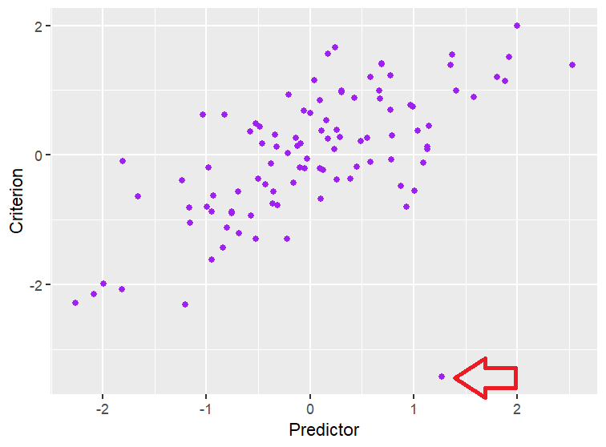
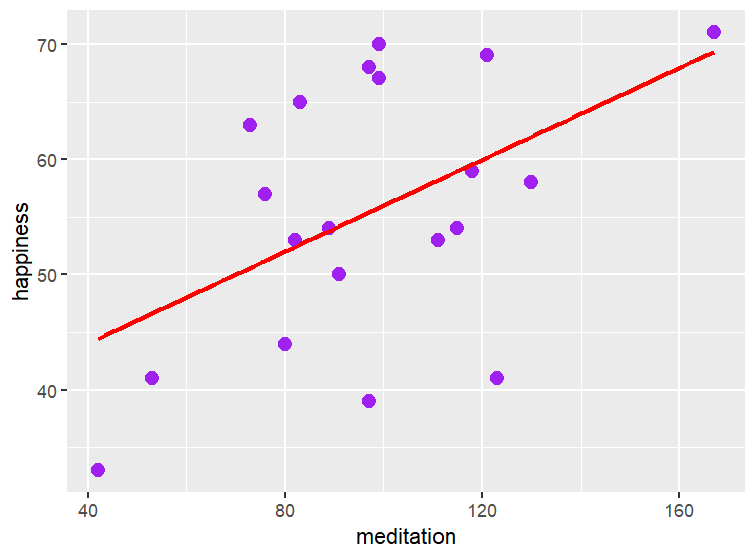
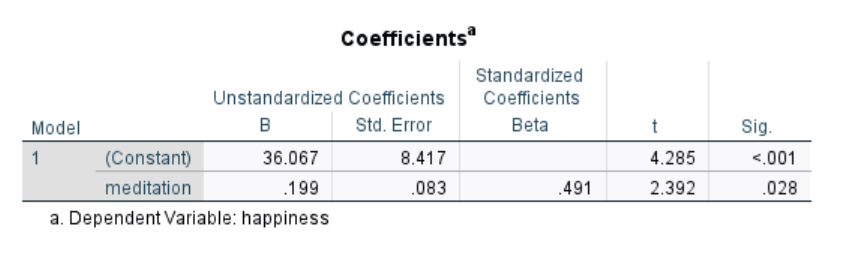
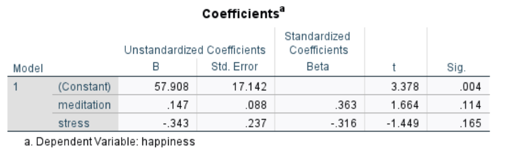

13 Regression
13.1 Learning Objectives
- Know what a simple regression is and what types of data it requires.
- Know the assumptions of a regression.
- Know how to interpret regression values like b-values, beta weights, and \(R^2\) .
- Know how a multiple regression differs from a simple regression, and know how to interpret its values
- Know the different approaches to regression (entry, hierarchical, forward and backward) and their pros and cons.
- Know what multicollinearity is and how it can cause problems in regressions
- How to write up the results of a regression.
13.2 Simple Regression
I often like to say that correlations and regressions are sisters – they are very similar procedures, but they have a slightly different vibe in terms of what information they provide to you. In many cases, you are better off running a regression instead of a correlation because it gives you more information, and it tends to be more flexible than correlations in terms of the types of data it can handle. But correlations do have their place in statistics – you see them all the time, especially in tables providing a general overview of how variables in a study are related aside from the specific hypotheses a researcher is investigating.
13.2.1 Assumptions of a Regression
Regression assumptions are quite similar to what we’ve seen with other parametric tests:
The relationships between variables are linear (i.e., not curvilinear).
Continuous variables should be roughly normally distributed and we don’t see major outliers
The relationship between variables indicates homoscedasticity
The data demonstrate independence (i.e., we don’t have participants influencing one anothers’ responses).
Regression tends to be less robust than t-tests and ANOVAs when these assumptions are violated, so if you have funky data, you may need to adjust it (addressing outliers, transforming variables) or consider an alternative approach like bootstrapping. It’s also worth taking a look at your data to see if there are any data points that might be influential. For example, consider the scatterplot below:

As you can see in the graph, the large arrow is pointing to a data point that is far outside of the scatterplot (and is extraordinarily low on the criterion). This data point would have an outsized effect on the results, so we may want to recheck our data to make sure there’s not a mistake or that these responses aren’t from a different population. There are some helpful diagnostic tools we can use to search for influential data points:
Adjusted predicted value
Deleted residual
Studentized deleted residual
Cook’s distance
Leverage
Mahalanobis distances
So, it’s worth checking to make sure your data is clean and that you are aware of any influential data points before you start your analysis.
13.2.2 A Simple Regression Between Two Continuous Variables
Let’s go back to our example from Section 12.1, where we explored the relationship between meditation and happiness using Table 12.1.
As you may recall, we looked over a scatterplot (Figure 12.1) to confirm that the data was linear and met the assumptions of a parametric test.
What a simple regression does, in a nutshell, is it plots a “best fit” line to the data. There is one, and only one, line that minimizes the vertical distance between each data point and a straight line. I won’t cover the math of how a statistical program determines what this line is here. But you may have learned in other math classes the basic formula for a line, often written as:
\(mx+b=y\)
In most statistical notation, this formula is written as:
\(\hat{y}=b_0+b_1(x)\)
But it’s ultimately the same thing despite the change in the notation. In this formula, \(\hat{y}\) indicates our predicted value for the dependent variable, and this is based on the \(b_0\), which is the y intercept (that is, if x=0, what would we predict someone’s score on y would be?) and \(b_1\), which is the slope of the line (that is, for a one-point change in x, how much do we expect y to change?)
This ability to predict is one feature that is an advantage of regression – while with a correlation, all we can do is state the relationship between variables, with a regression, this line allows us to provide a predicted value on the dependent variable if we have someone’s score on the independent variable. So, let’s plot a regression line on our meditation data:

We can see right away that, while our prediction is not perfect, there is certainly a positive relationship between variables. But perhaps we want to know something more specific – if someone meditates for 60 minutes a week, what can we expect their level of happiness to be, based on these data?
When we conduct a regression, we get quite a bit if information from the output. Most statistical programs will provide some unstandardized coefficients (sometimes referred to as b-values). These values are what we can use in the formula to figure out where a point might lay on that best fit line (often known as a “fitted value”). Take, for example, the outputs below from SPSS:

While we don’t tend to report unstandardized coefficients, they have a lot of practical use. For example, let’s say that we do, indeed, want to make a prediction about how stressed someone is if they meditate for 80 minutes a week. We can simply use the unstandardized slope (.20) and the y-intercept (36.07) to create the formula for a line, and then we input 80 in the place of x:
\(\hat{y} = (.20)(80)+36.07 = 52.07\)
Sure enough, if you go back to the scatterplot, you’ll see on the regression line that for a score of 80 minutes of meditation, we see the line is right at about 52. Of course, this is just a guess – you can see that one participant who spends 80 minutes meditating only gets a happiness score of about 44, but we know at this point to expect some error in any statistic.
While the unstandardized coefficients are practically useful, more often, in scientific writing researchers report the standardized values, often referred to as \(\beta\) values. What is happening behind the scenes is that the statistical program transforms both the predictor and the criterion into z-scores, and then calculates the regression and provides these standardized values. These are beneficial because they are on a roughly -1.00 to +1.00 scale1, so they are more comparable. Here, we see that \(\beta=.49\) , which is a decently strong relationship. If you have an amazing memory, you may also remember that in Section 12.1, we found that \(r=.49\) too! So for a simple regression, the \(\beta\) value is the same as the Pearson correlation. This will change as we move into multiple regression, but it’s a nice way to see the connection between regression and correlation.
Most programs also provide a measure of the effect size, often represented as \(R^2\), which is an indication of how much variance is explained by the model. For these data, we find that \(R^2=.24\) (which is .49 squared). So, in other words, about 24% of the differences we see in stress levels can be explained by meditation, which is quite a large amount indeed!
13.2.3 A Simple Regression Between a Dichotomous Predictor and a Continuous Criterion
Regressions are also good about handling a dichotomous predictor. Let’s take, as an example, the item data from Section 12.1, which you can see in Table 12.3.
If we wanted to, we can use regression to answer the question “If someone gets this item correct, what would their score be on the exam?” We can run a regression in the same way we would for a continuous predictor, and we also get output that provides us with some unstandardized and standardized coefficients. The intepretation is a little bit different here, but it’s conceptually the same. The unstandardized values still indicate the y-intercept and the slope, but if we code our predictor using 0 and 1, we’ll notice something interesting. Here’s the formula we get from conducting this regression:
\(\hat{y}=31.41(x)+41.22\)
You’ll notice if we solve for people who didn’t get the question correctly, we find:
\(\hat{y}=31.41(0)+41.22= 41.22\)
Aha! The solution is the y-intercept, which makes perfect sense if you think about it: The y-intercept is what y equals when x equals zero, and x equals zero when someone doesn’t solve the item correctly, so 41.22 is, in fact, the average for the group that didn’t answer the item correctly. When we solve for the equation for people who did get the question right, we find:
\(\hat{y}=31.41(1)+41.22=72.63\)
This also makes sense, because the slope tells us how much of a change in y occurs for a one-point change in x, and a one point change in x just means that someone got the item correct. Sure enough, if you look at the data, you’ll find the exam average for people who got this item correct is also 72.63.
As you think this over, you might find yourself asking “Wait, isn’t this regression basically the same as an independent t-test?” Yep! It is the same, it’s just a different way of thinking about it. You might also find yourself saying “How is this different from a point-biserial correlation?” It’s not different, actually! If you look at the \(\beta\) value, you’ll find \(\beta=.74\), which is the same correlation we found for this data back in Section 12.3.2! So, now you have three tools you can use to understand the difference in means between two groups.
We can also understand variance explained by looking at the \(R^2\). Here, \(R^2=.55\), which means about 55% of the variance in student scores is explained by whether they get this question correct.
13.2.4 Wait… can I do a regression with a polytomous variable?
You can! But it’s a bit fiddly to do. Essentially, you’d need to dummy code your variable into dichotomous yes/no categories. For example, if we wanted to include religion in a regression, and people choose among 4 categories (Christian, Muslim, Buddhist, Hindu), you would need to set up 3 dichotomous variables with 0=no and 1=yes:
| ID | Christian | Muslim | Buddhist |
|---|---|---|---|
| 1 | 1 | 0 | 0 |
| 2 | 0 | 1 | 0 |
| 3 | 0 | 0 | 1 |
| 4 | 0 | 0 | 0 |
In this example table, we have one of each religion I listed. You’ll also notice that one category (Hindu in my example) doesn’t have a column. Basically, someone who is Hindu is listed as a “none of the above” category. This is necessary to do; if you included a Hindu category, you’d end up with something called “Perfect Multicollinearity” (I’ll explain this in the next section) and your regression won’t run. So, we can think of the Hindu group here as more of a “baseline” group.
We can also do this if a variable is not mutually exclusive. Take, for example, when we assess race in a survey – if we use a “check all that apply” instruction, someone who is multiracial might check several boxes. That’s not a problem – we can make a decision if we want to use the dummy coding approach and just allow them to have a 1 in multiple categories, or if we want to create an additional “multiracial” group in our data that would be a 1 if someone checks more than one box. This depends on how that variable is typically treated, the nature of that variable, and the nature of your question.
But to analyze this, you now have more variables, so you wouldn’t be able to use simple regression to examine a polytomous variable – you’d need a multiple regression. Let’s talk about that next.
13.3 Multiple Regression
Simple regression shares a lot of DNA with correlations. However, remember that in Section 12.1, we were only able to do correlations between two variables, so as a statistical analysis tool, it is limited in that way. But multiple regressions are not – we can put in several variables of different types into our model to see how they all work together to predict some outcome. But in order to make the jump from simple to multiple regression, we need to discuss something called “shared variance.”
13.3.2 An Entry Multiple Regression with Two Predictors
As we move from simple to multiple regression, we’re still just charting a best fit line, but now the line is taking place in three or more dimensions, so it gets a little tricky to illustrate. In our example, we are working in three dimensions, with happiness on the y axis, meditation time on the x axis, and stress on the z axis:
[insert 3D illustration]
There is still one, and only one, best fit line that tries to minimize the distances between each point and the prediction line. The equation for our line gets a bit more complex, as we now need to add an additional variable:
\(\hat{y}=b_0+b_1(x_1)+b_2(x_2)\)
When we conduct our regression, we get these results:

We still have a y intercept, but now we have a slope assigned to each predictor in our model. Again, the output provides us with b-values, which allow us to make a prediction on someone’s score on the outcome given their scores on the predictors. It also gives us \(\beta\) values which help us understand the relative “importance” of each variable in the model.
In this particular model, we see that whereas meditation time predicted happiness in our simple regression, it no longer is a significant predictor once we add stress into the model. Because our two predictors are (negatively) correlated, it seem that they are fighting over variance in the happiness variable, which leads them to drop out of significance (we also are working with a very small data set for this example, so as you’ve learned, we don’t have a lot of power here, which means it’s easy for large effects to be non-significant). Despite the lack of significance, we can still use the equation to guess what someone’s happiness level would be if they spend 40 minutes meditating and rate their stress as a 57:
\(\hat{y}=57.91+.15(40)+ -.34(57)=44.53\)
And given the \(\beta\) values, we can see that they are relatively similar in how important they are in predicting outcomes, but in opposite directions (meditation time is positively related to happiness, while stress is negatively related to happiness).
The regression we’ve just done here is often known as an entry regression; we start with a specific model we want to test, and just test it all at once. However, this is not your only option!
13.3.3 Hierarchical Regression
Another option we have with regression is we can add more predictors to our model in several steps. This is a great option if there’s a variable we know probably relates to our outcome, and we want to know whether another variable predicts above and beyond that first variable. This gets right at the question of incremental validity – if we have one variable in our model and then add two more, this tells us whether the addition of those variables is at all helpful for predicting outcomes. We can compare models to see how our equation and the beta weights change as we add predictors. We can also look at a change in \(R^2\) (sometimes notated as \(\Delta R^2\) ) to see how much more variance we can explain with an additional variable.
To illustrate how this works, it’s helpful to have a larger data set, so you can check out the data set “Meditation 2” to understand what’s going on in our analyses. In this example, imagine we still want to study happiness, but now we’ve collected some data on gender, household income, meditation, stress, and motivation. The first five lines of the data are provided below:
| id | meditation | happiness | stress | liking | gender | hhincome | motivation |
|---|---|---|---|---|---|---|---|
| 1 | 107 | 54 | 43 | 41 | 0 | 57 | 6.61 |
| 2 | 13 | 42 | 69 | 48 | 1 | 120 | 2.15 |
| 3 | 93 | 58 | 43 | 51 | 0 | 111 | 6.37 |
| 4 | 90 | 48 | 51 | 41 | 0 | 78 | 8.71 |
| 5 | 76 | 37 | 61 | 62 | 0 | 70 | 7.73 |
In our research, perhaps we recognize there is some relationship between demographics like gender and income on happiness, and we’re interested in whether meditation will help above and beyond those factors. So, we can put gender and income into the first step of our model (Model 1), then add meditation in the second step (Model 2). We can also generate information about how much of a change we see in variance we can explain once we add meditation in the second step. Output might look something similar to this:
| Variable | B | \(\beta\) | p |
|---|---|---|---|
| Intercept | 49.86 | – | <.001 |
| gender | 3.03 | .12 | .06 |
| hhincome | .03 | .07 | .28 |
| Variable | B | \(\beta\) | p |
|---|---|---|---|
| Intercept | 29.98 | – | <.001 |
| gender | -.37 | -.01 | .79 |
| hhincome | .02 | .03 | .54 |
| meditation | .25 | .59 | <.001 |
| Model | \(R^2\) |
|---|---|
| Model 1 | .02 |
| Model 2 | .34 |
| \(\Delta R^2\) | <.001 |
These results tell us a few things. First, we can see that in our first model, gender and household income don’t provide much prediction on happiness. When we add meditation in, we can see that our coefficients in the model change a little, but the outcome is the same, and we see that meditation is significant. Indeed, if we compare the \(R^2\) between models, we see it jumps up quite a bit (and an ANOVA conducted on these models indicates a significant change, p<.001). So, this tells us that gender and income are not helpful predictors, but that our model improves once we add meditation.
13.3.4 Exploratory Regressions: Forwards and Backwards Regression
There is one additional way we can use regression, but I want to emphasize here that this is not a great approach in terms of scientific rigor. Ideally, when we conduct research, we have a hypothesis in mind, and we collect data to see if there’s support for that hypothesis. But sometimes we just have data that’s been collected for other purposes, and we might be curious about what different factors might predict an outcome. In this case, we can take advantage of exploratory regressions that examine what relationships exist, and use that to test several models to come up with the best model to explain the outcome. The problem with this approach is that it takes advantage of chance – if we had 20 variables in our initial model, we may accidentally identify one of them as important just because of the 5% chance of a Type I error. So, in order to feel confident in our findings, we really should replicate our study with a sample drawn specifically to retest our model. Hopefully we’d find the same outcome, but there certainly is a chance we won’t!
There are several approaches we can take to these exploratory regressions, but two are popular enough in the literature to merit an example. Sometimes, we start with and empty model and allow our statistical program to choose variables that perform the best and add them to the model until adding variables no longer improves our prediction. This approach is known as a forward regression. We can also do the opposite – we start with all possible variables in the model, and the statistical program removes them one by one until removing one produces a significant change in the variance it can predict. This approach is known as backward regression.
Sometimes, you will get slightly different findings if you do a forwards versus backwards regression. I generally recommend people use a backward regression if they want to explore data, because it’s better at discovering something called a suppressor variable. A suppressor variable is when it makes the relationship between two variables stronger when it’s added to the model. Take for example in our Meditation 2 data, imagine I am trying to predict happiness, and I don’t have a good theory for what might be happening, so I conduct a backward regression with all other variables as a predictor. My initial model will include all variables, and each subsequent model removes the least useful predictor. My final model looks like this:
| Variable | B | \(\beta\) | p |
|---|---|---|---|
| Intercept | 74.46 | ||
| meditation | .15 | .36 | <.001 |
| stress | -.53 | -.43 | <.001 |
| liking | -.21 | -.17 | <.001 |
| gender | 3.77 | .15 | .003 |
Here, we see that household income and motivation don’t end up predicting anything significantly, so they drop out of the model. However, this certainly might just be due to chance, so whenever you use an exploratory method like this, it’s best practice to do a follow up study using these variables and an entry regression to confirm that your findings are dependable.
13.4 Writing the Results of a Regression
When writing the results of a regression, you typically want to indicate the following:
Provide information about the regression – what variables are included, and explain whether you’ve used an entry, hierarchical, or exploratory approach. If you don’t specify anything, most people will assume an entry regression.
Although b values are helpful in most applied situations, we don’t tend to report them in scientific reports.
\(\beta\) values are more helpful in a scientific context, so we typically report those, with their related significance value.
The \(R^2\) value is helpful to understand how much variance is explained by your regression.
If you are doing a hierarchical regression, you must provide all the \(\beta\) weights and their significance at each step. It also is helpful to either provide an \(R^2\) value or a \(\Delta R^2\) value so that your audience understands how adding predictors changes how each variable contributes to the prediction, and whether the addition of new predictors helps us better predict the outcome. Often, tables make it much easier to convey this information briefly and clearly.
A multiple regression indicates that meditation does not significantly predict happiness ( \(\beta\)=??, p=.??) and ??? ( \(\beta\)=?? , p=.??) .
I conducted a hierarchical regression with xxx in the first step, and xxx in the second step. Results are presented in Table 1. The final model suggests that the addition of ??? :::::
There are some occasions where you might see a \(\beta\) value that is greater in magnitude than +/- 1.00; we’ll talk about that later in this chapter when we discuss assumptions of a regression.↩︎